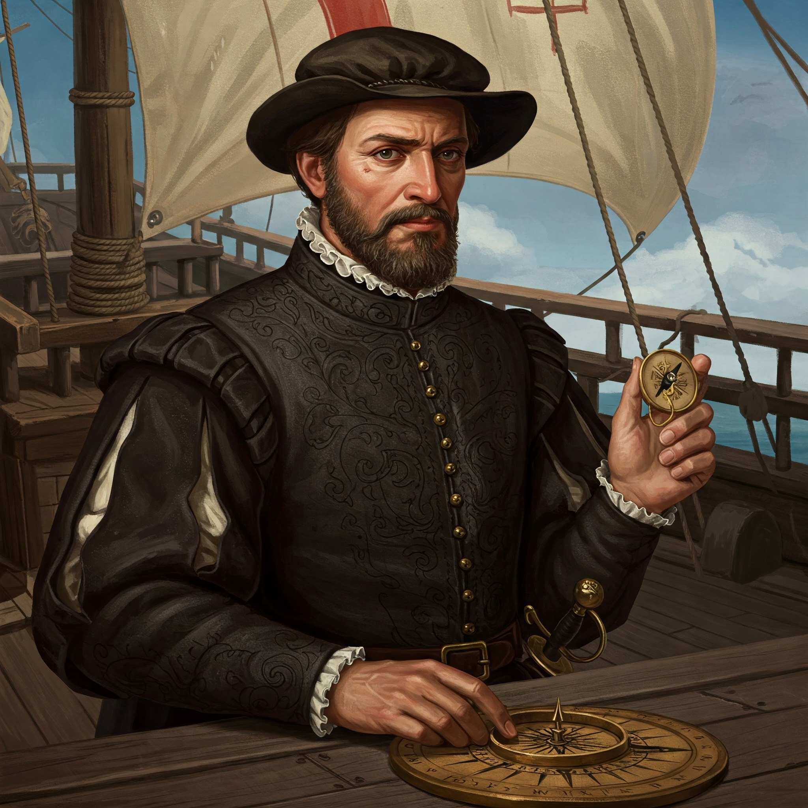

6. Bartholomew Dias – The Man Who Opened the Gateway to India (1488)
- Bartholomew Dias was a Portuguese navigator and explorer.
- He was the first European to sail around the southern tip of Africa, showing that the Atlantic and Indian Oceans were connected.
The Historic Voyage (1487–1488)
- Dias was sent by King John II of Portugal to find a sea route to Asia.
- He set sail in 1487 with 3 ships.
- In 1488, he successfully rounded the Cape of Good Hope, at the southern tip of Africa.
At first, he named it the “Cape of Storms” because of rough weather. But the king renamed it “Cape of Good Hope”, as it gave hope of reaching India by sea.
Why Didn’t Dias Go All the Way to India?
- Dias wanted to continue, but his crew mutinied (rebelled) because they were tired and scared of the unknown.
- He was forced to turn back, even though India was likely just a few weeks away.
Even so, his journey was a turning point in world history.
Aftermath and Legacy:
- Dias returned to Portugal in 1488, a national hero.
- He later helped design ships for Vasco da Gama’s voyage in 1497.
- Sadly, he died in 1500, during a storm off the Cape of Good Hope, while on another voyage.